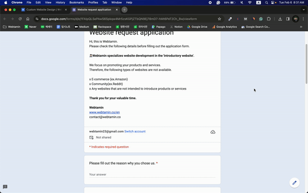
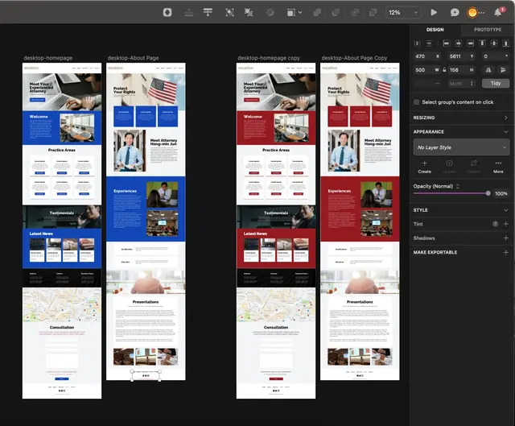
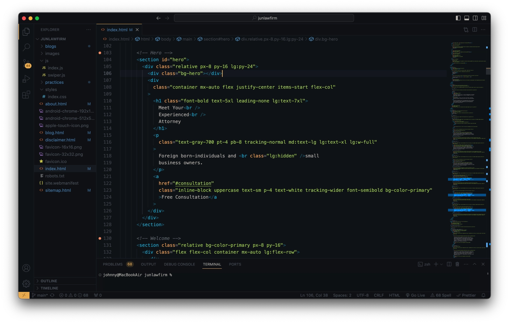
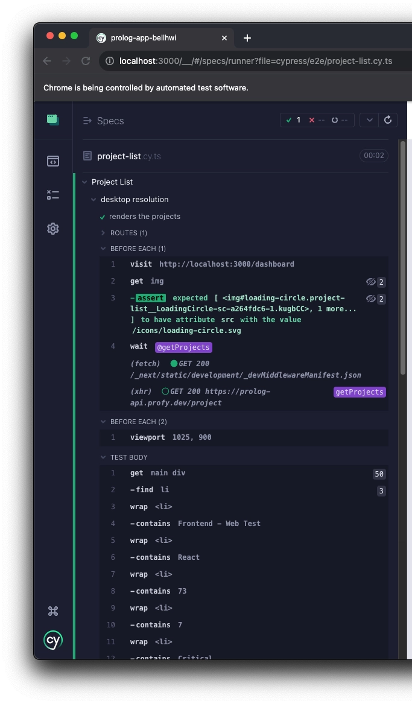

Website Design Process Explained in 5 Steps
01-06-2024
Do you know how websites are created? You might think, “Do I need
to know?” “I don’t know and that is why I leave it to the agency,
man.” 😂
You’re right. You don’t have to know any technical knowledge such
as design and development required to create a website. However,
we recommend that you know roughly about the website design
process as a client.
The reason is that you need to know this to
communicate closely with the agency.
If you don’t know this, you can’t understand the language of the
agency. You may wonder what this means when the agency doesn’t use
another language or something. For example, it’s like this.
Hello World Agency: Hello, sir. The current website design draft
has been completed and I’m delivering the mock-up. After that, it
will be developed by coding and tested using automation tools.
Please note that we will help you register the domain at the end
of the project and use the hosting of the xyz platform for
distribution ^^
If you understand what this all means, you can go back. If not,
make sure to read this article. And when the scroll hits the floor
in 5 minutes, come back here. You will experience the magic of
understanding 100% of what the Hello World agency says.
Once again, don’t worry, it’s not rocket science. It’s enough to
know only
the basic knowledge
covered in this article. Then, let’s take a look at the forest
called website design. The development of a website will mainly go
through the following five stages.
1. Planning
Planning is the stage of coming up with the purpose and content
of the website.The general purpose of website development is as follows.
- Business: Increase sales through product and service introduction
- Individual: Getting a job by proving one’s skills
After you decide on your purpose, you’ll be thinking about what
content you’ll include on your website. It mainly consists of
product and service descriptions, company introductions, portfolio
introductions, and inquiries. After that, we collect the necessary
information on the website. The information you need includes
images, videos, and writing on each page.
The reason we have to come up with the idea is that the agency and
the client have to be on the same page. What’s in the client’s
head should be shared with the agency as it is. I know it sounds
so vague. Let me give you an example.

Webtamin has two questionnaires for the client. The first
questionnaire consists of basic questions. The client will answer
basic information such as the main purpose of the website, the
available images and videos, and the information required.
The second one is an in-depth questionnaire. The content consists
of more in-depth questions compared to basic questions. The client
writes in-depth information related to the business, including
target customers, new customer inflow channels, and
differentiation from other companies.
Based on this, Webtamin analyzes businesses and visitors in depth.
The result is content that captivates the visitor and achieves the
client’s purpose.
The simple informational writing is nothing but only passes
through the visitor’s eyes.
2. Designing
Designing is a step in planning the appearance of a
website.In the beginning, you will produce a rough blueprint of the
website’s layout. This blueprint is called a wireframe.
After that, based on the wireframe, the agency will consider the
following visual factors.
- Color
- Font
- Blank space
It will then determine these factors and apply them to the
wireframe to create a design. This design is called a mock-up. The
reason why we need a mock-up is to discuss the design with our
customers. The advantage of the mock-up is that you can create
design results much faster than the actual website design.

Webtamin uses design tools to produce and utilize a mock-up. It
reflects the reference website provided by a customer and design
trends. After that, the completed mock-up will lead to a design
discussion with a customer.
A typical website agency usually places a limit on the number of
design changes at this stage. In other words, only a few design
revisions can be made.
Webtamin provides unlimited design revisions until customers are
satisfied.
Webtamin’s philosophy is that websites that customers don’t
like cannot satisfy visitors.How long can the design change be made? Until the customer is
satisfied 😎
3. Developing
Developing is the work of implementing designs and functions on
a website. There are two main ways to develop a website.
The first method is to use a web builder. A web builder is a tool
that helps you create a website without programming knowledge. The
web builder is a platform like WordPress or Wix that you’ve heard
of at least once.
Web builders are easy to use, so most companies use them. However,
there is a limit to customize the design.
This makes it hard to express the unique identity of the
brand.
There is a problem that functions can only be developed within the
scope allowed by the web builder, as well.
The second is the method of coding. Coding is, in short, giving
commands to a computer. When creating a website, is developed by
opening a program such as a notepad to write commands.
This method is less accessible because it requires specialized
technical knowledge. Website costs are also relatively high
because they require expertise and time compared to web builders.
However, if you choose this method, you can create a completely
customized website. This is because there are no restrictions on
the designs and functions that can be developed.

Part of the source code in Webtamin customer’s homepage Webtamin
is creating a customized website with coding. The reason is that
there are no restrictions on the development of design and
features, so we can create a website optimized for the
brand.If you want to know more about the customized website, we
recommend you read the column on the Webtamin homepage below.
4. Testing
Testing is a step to ensure that all the features on the
website work well.Test the following;
- if all the pages are shown well
- if buttons or links work well
- if you can see it well on mobile devices such as tablets and smartphones
- if the loading speed is too slow
The reason for testing is to satisfy the user. If it takes more
than 3 seconds to load the page, users want to go back. Users want
to close the window if the content is too small to read on their
smartphone.
There are often agencies that skip this testing phase. If it’s a
minor problem such as typos and design mistakes, it’s okay.
However, serious problems can also occur, such as missing
important links or malfunctioning buttons. If you don’t recognize
this and discover it after a long time, the loss becomes
indescribable.

Webtamin doesn’t trust humans when it comes to errors. The reason
is that humans are bound to make mistakes. Even experienced
developers can create errors with one typo among many codes.
Webtamin utilizes an automated testing program to address this
issue. We use a tool called Cypress to
create and conduct tests on things that people may miss.
Since the website is created by coding, the test code can also be
written in detail without limitation. That’s why Webtamin’s
homepage is bug-free and sturdy 😁
5. Deploying

If you’re still reading this, you’re a wise person 👍 Finally,
the deployment is the step of registering the website on the
Internet for all to see.You need domains and hosting for others to see your website.
A domain is the address of a website. For example,
https://webtamin.co/en is a domain for a Webtamin website.
To register the website address you want, you will pay
accordingly.
Hosting is a website space rental service. The website consists of
files such as texts, images, and videos. For others to view the
website, these files must exist on the Internet. To do that, we
need space on the Internet to hold these files. This space is
called a server. Hosting refers to a service that lends this
server.
Some bad agencies may overcharge their hosting servers. They also
ask for a larger amount than the actual hosting fee. The customer
may not know this technical part and may not know and be subjected
to it.
Webtamin uses a free hosting platform called Netlify. The
corresponding amount will only be charged if the free available
traffic(=number of website visitors) is exceeded. Domain costs
also charged only the actual amount.
Webtamin is based on transparency in principle for all service
costs.
So far, we’ve looked at the five stages of the website’s
development process. It’s obvious, but the order or details of
each agency may vary. If you request website development in the
future, what you read today will help. Congratulations on your
basic knowledge of website development 👏
Don't hesitate to contact us with questions or requests about the
website design.